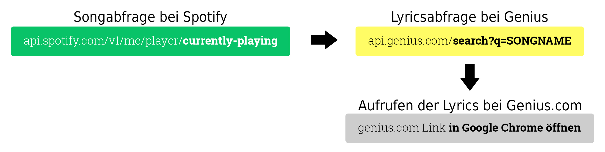

Live Lyrics
Live Lyrics ist eine Browser-Erweiterung für den Google Chrome Browser.
Dieses ermöglicht dem Nutzer die Verbindung zum Spotify-Account und das
Anzeigen der Lyrics in Echtzeit. Ich werde in diesem Beitrag über die
Addon-Entwicklung und den Webdesign Prozess berichten.
Link zum Projekt
Addon-Entwicklung
Ich startete mit der Verfassung meiner Grundidee. Diese war, eine Echtzeitanzeige der Lyrics von dem aktuell Spielenden Song auf Spotify. Für die Umsetzung Nutzte ich die APIs von Spotify und Genius.
Die Authentifizierung mit Spotify wird durch eine Chrome Extension Funktion ausgeführt. chrome.identity.launchWebAuthFlow Dadurch können Logindaten nicht mitgeschnitten werden.
Aufgrund von Namensabweichungen zwischen Spotify und Genius, war eine Namensverarbeitung nötig. Als Beispiel: Songname auf Spotify: Home (with Mashine Gun Kelly, X Ambessedors...); Songname auf Genius: Home. Als Präventivmaßnahme nutzte ich ein System, welches den Songnamen nach bestimmten Zeichen (z.B. -, (, ), /) abschneidet. Dadurch werden kostante Resultate erzielt.
Die Erweiterung befindet sich noch im Beta Stadium und ist deshalb nicht im Chrome Webstore erhältlich.